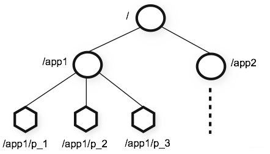
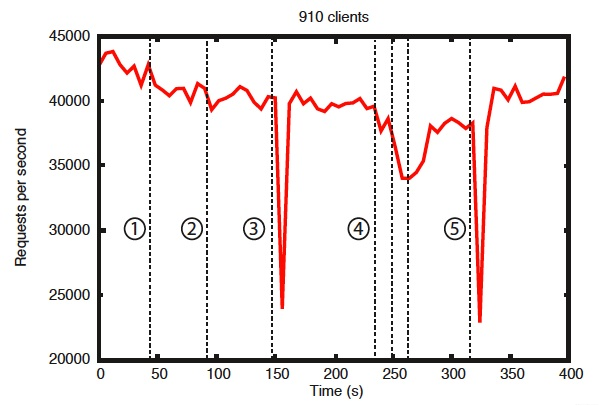
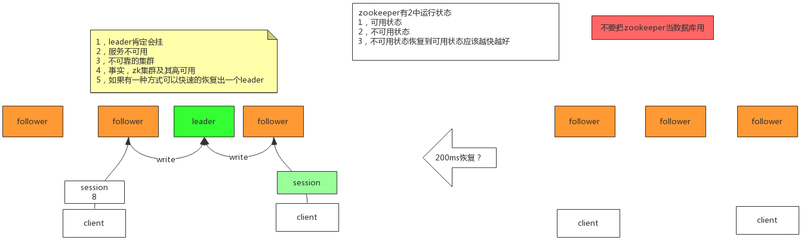
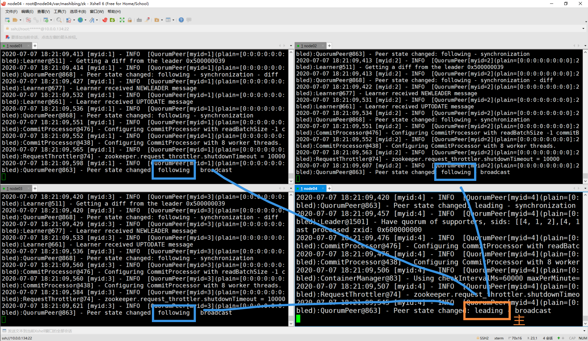

ZooKeeper介绍
什么是ZooKeeper？
官方文档：https://zookeeper.apache.org/doc/current/zookeeperOver.html
ZooKeeper：分布式应用程序的分布式协调服务
- ZooKeeper使用了按照文件系统熟悉的目录树结构命名的数据模型。
- ZooKeeper提供的名称空间与标准文件系统的名称空间非常相似。名称是由斜杠（/）分隔的一系列路径元素。ZooKeeper命名空间中的每个节点都由路径标识。
- 名称空间由数据寄存器（称为znode）组成，它们类似于文件和目录。与设计用于存储的典型文件系统不同，ZooKeeper数据保留在内存中，这意味着ZooKeeper可以实现高吞吐量和低延迟数。
- 像它协调的分布式进程一样，ZooKeeper本身也可以在称为集合的一组主机上进行复制。
- 众所周知，协调服务很难做到。它们特别容易出现诸如比赛条件和死锁之类的错误。ZooKeeper背后的动机是减轻分布式应用程序从头开始实施协调服务的责任。

zk 集群
每个节点的数据都一样。有一个leader，其他都是follower，是一个主从集群。写操作只能发生在leader身上。 主挂了怎么办？zk可以快速自我修复。

下图左侧：可用状态 下图右侧：不可用状态（leader挂掉了）
（图待补充）
不可用状态恢复到可用状态，应该越快越好！
官方压测
存在错误中的可靠性表明部署如何响应各种故障。图中标记的事件如下：
1、追随者的失败和恢复 2、其他追随者的失败和恢复 3、领导者的失败 4、两个追随者的失败和恢复 5、另一个领导者的失败
官方压测结果：ZooKeeper只需不到200毫秒即可选出新的领导者。


不要把zk当数据库用
redis 可以作为数据库使用，但zk不应该作为数据库。
zk每个node只能存1M，是为了保证对外提供分布式协调时的速度。
临时节点
每个客户端连接到zk之后，一定会有一个session来代表这个客户端，用来表示当前的会话。
依托session，我们有了临时节点的概念，可以用来解决之前redis加锁时需要设置过期时间的问题：
- 客户端在，session就在，锁就在。
- 客户端不在了，session就不在了，锁就释放了。
序列节点
持久节点 和 临时节点，都可以作为序列节点。
ZooKeeper 的特点
- 顺序一致性：来自客户端的更新将按照发送的顺序应用。
- 原子性：数据更新的成功或失败，要么全部节点都成功，要么全部节点都失败（最终一致性）
- 统一视图：无论客户端连接到哪个服务器，客户端都将看到相同的服务视图。即使客户端故障转移到具有相同会话的其他服务器，客户端也永远不会看到系统的较旧视图。
- 可靠性：一旦应用了更新，该更新将一直持续到客户端覆盖更新为止。
- 及时性：确保系统的客户视图在特定时间范围内是最新的（很短的时间内内达成最终一致性）。
安装
我的博客 https://blog.csdn.net/sinat_42483341/article/details/107154663
节点间通信原理

以 node04 是 leader 的情况为例，节点间连接情况如下：

使用 netstat -natp | egrep '(2888|3888)' 查看